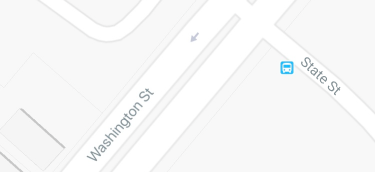

Eastbound
-
60
> Randolph/Harbor Dr
-
9:30am
Every 20 minutes
-
124
> Navy Pier
-
9:43am
Every 10 minutes
Northbound
-
151
> Devon/Clark
-
9:40am
Every 16 minutes
Southbound
-
J14
> 103rd/Stony Island
-
9:55am
Every 15 minutes
-
124
> Navy Pier
-
9:53am
Every 10 minutes
Reroute
-
6x
> Jackson Park Express
-
N/A
Out of Service
-
4
> Cottage Grove
-
Resumes 12:10pm
-
20
> Madison
-
Resumes 12:10pm
-
157
> Streeterville/Taylor
-
Resumes 6:00pm